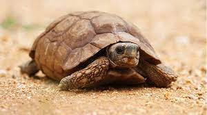
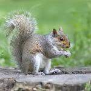
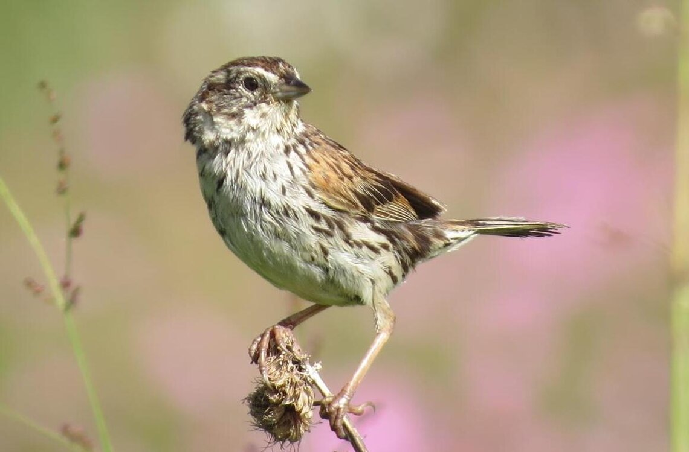
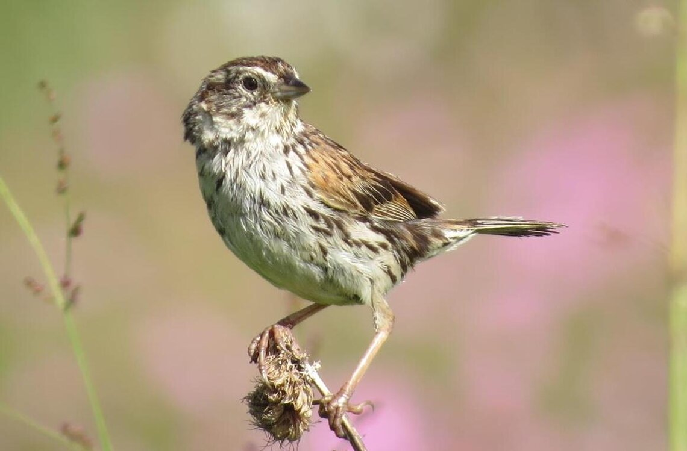

Animales en peligro de extinción en Durango. Se entiende por animal en peligro de extinción a una especie que está en peligro de que se muera toda su descendencia al igual que lo hizo suascendencia, en Durango tenemos muchos tipos de especies en peligro de extinción por la falta de asociaciones y apoyo por parte del gobierno ya que la verdad el gobierno no hace mucho por ayudar a estasespecies que nos ayudan con el ciclo del carbono y gracias a eso podemos respirar y comer porque sin esos animales no existirían las cadenas alimenticias ni se podría hacer la fotosíntesis una de las razónpor las que pasa esto es que no hay control completamente de las personas que salen a cazar animales sin tener en cuenta si son animales en peligro de extinción o no unas de estas especies es la delJabalí o la del pavo silvestre una cosa que se debe destacar es que estas especies no se encuentran en cualquier parte
 Las causas naturales de su desaparición es elenvejecimiento, la enfermedad y la competencia con otras especies y las causas que provocamos nosotros como seres humanos son los incendios, la destrucción del medio ambiente, la sobre explotación de losrecursos naturales, la explotación agropecuaria y la explotación forestal, las causas provocadas por la naturaleza son los Incendios, las sequias, las inundaciones, los volcanes, los glaciares y loshuracanes, Sin duda el ser humano es el que más culpa tiene ya que pedimos más y más pero sin embargo no damos nada a cambio lo que sería bueno es que por cada árbol que talamos plantáramos 10 pero no essolo plantarlo sino también cuidarlo y procurarlo para que pueda crecer y darnos oxigeno pero hay tantas personas a las que no les importa lo que hacemos con el medio ambiente pero es algo por lo quedebemos preocuparnos ya que eso nos ayuda dándonos oxígeno.
 
